What it is
The engine plays ShadowFlare the way the original does: its maps, scenario scripts, monsters, items, classes, spells and dogs, worked out by reverse engineering the original game. It ships with none of the original's files. You can play it two ways:
- With your own copy of ShadowFlare. Point the engine at your game folder and it reads the original data at runtime. An optional "original mode" plays by the original's rules, quirks and bugs included.
- Without it. The engine runs on its own open content: ShadowFlare-style art, maps, monsters and story made for this project in Blender, under the MIT license. Every picture on this page comes from that open content.
Features
- The original's worldRemote Town, Cold Svalt and the fields, forests, ruins and mines around them, with exits and warp gates between areas.
- Fighting and monstersMonsters wander, close in and strike as the game's own AI data says; the hero levels up and earns loot from the original drop tables.
- Classes and magicWarrior, hunter and wizard careers, spells learned as you level, power mode, the magic window and the spell effects.
- Partner dogsSend your dog into battle or call it back, and pick new dogs at the kennel.
- Towns and peopleTalk to townspeople, take missions, and use shops, healers and class instructors as their scripts say.
- The full interfaceGame panel, inventory and equipment, status window, mission list, area map, settings menu and six save slots.
- Open replacement artHeroes, townspeople, 24 kinds of monster, map pieces, items, interface and story pages, all drawn from scratch.
- Native first, web laterBuilt with CMake and SDL2 for desktop; a WebAssembly build from the same code is planned.
Screenshots

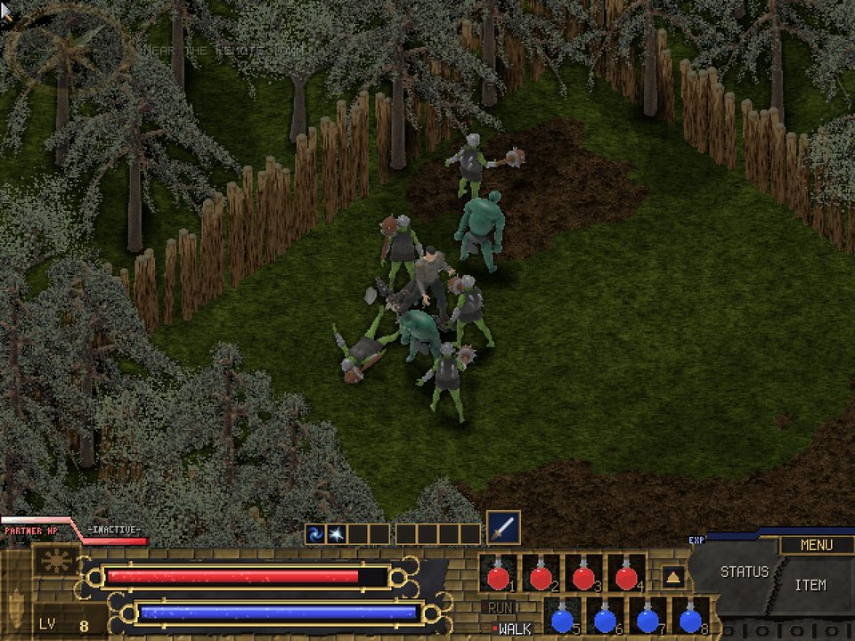

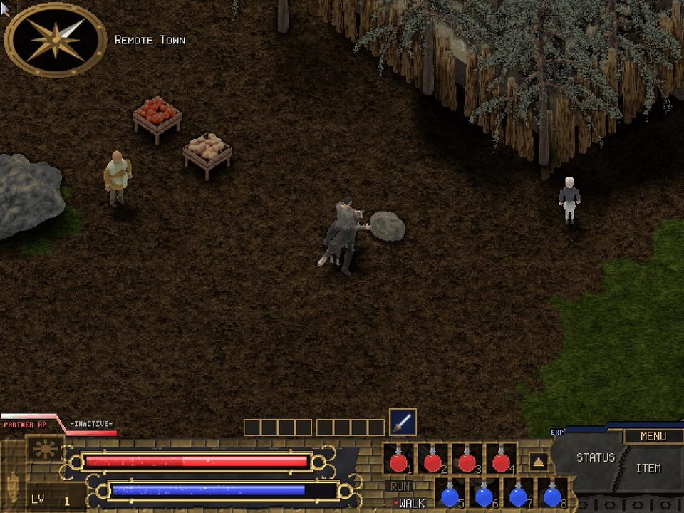

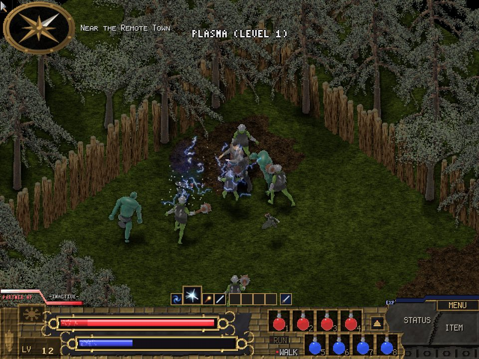

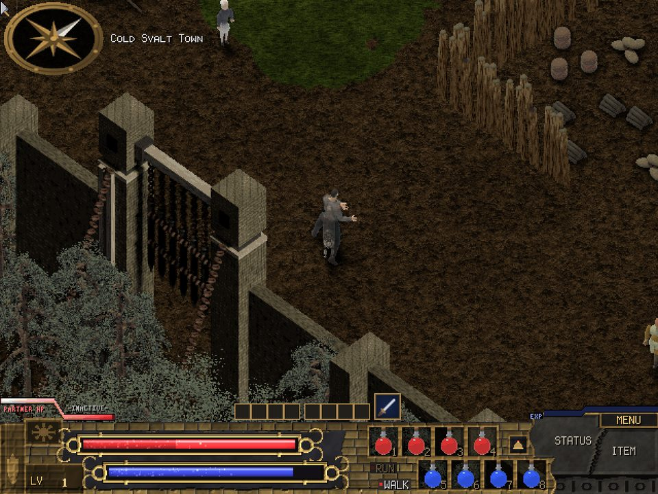

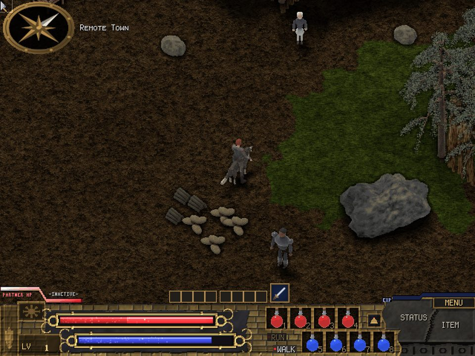

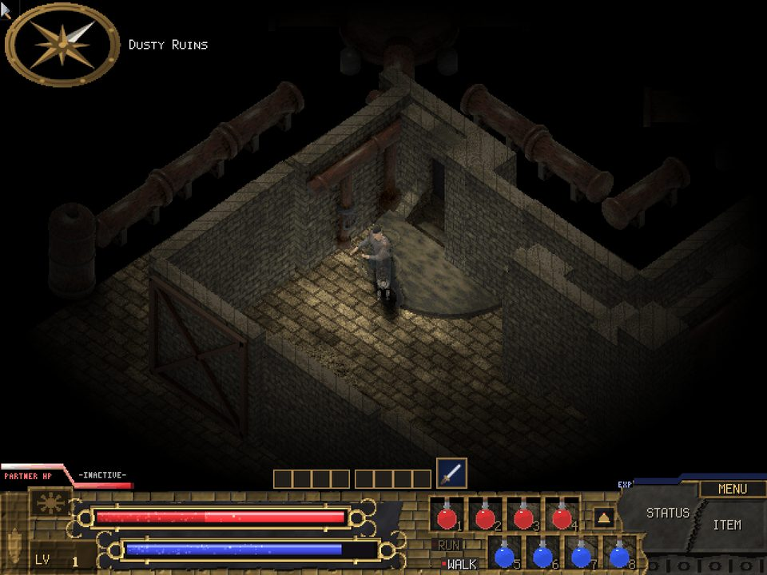

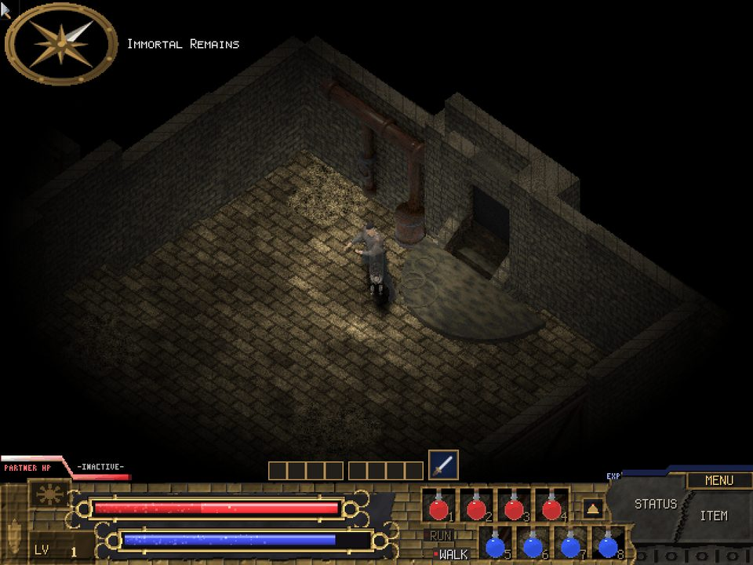

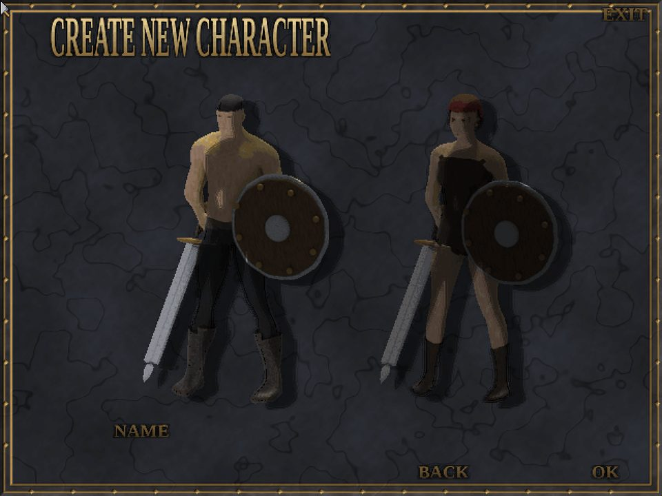

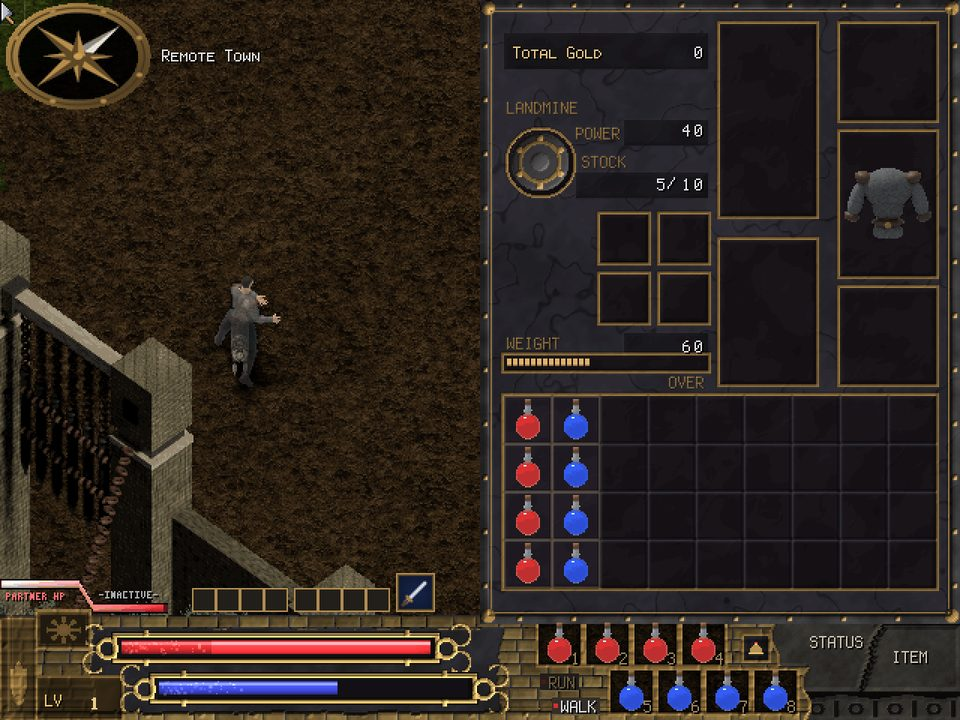

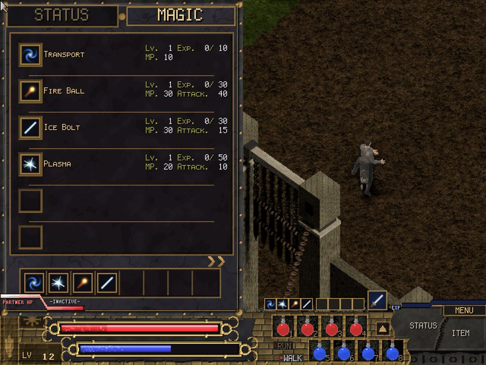

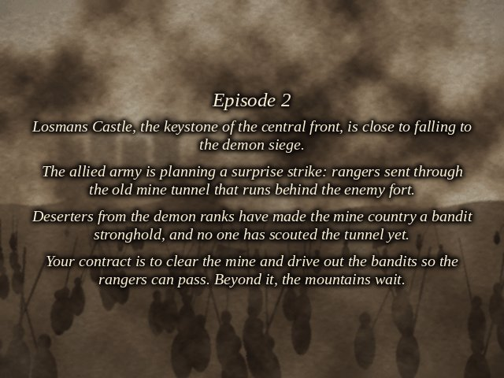
Building
You need a C++20 compiler, CMake and SDL2.
cmake -S . -B build -DCMAKE_BUILD_TYPE=Release
cmake --build build
./build/shadowflare # open content, or game/ if you have it
./build/shadowflare --data path/to/ShadowFlareLicense
The engine's code and the open content are both under the MIT license. ShadowFlare is the work of its original developers; this project is not affiliated with them and contains none of their files.